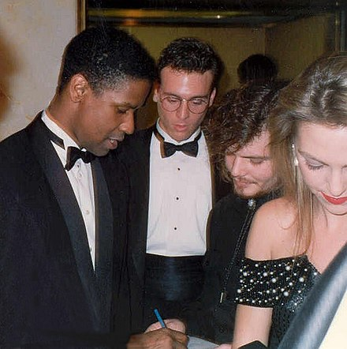
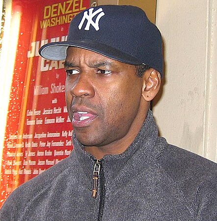
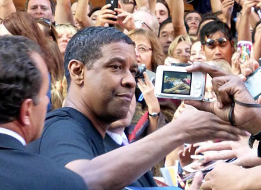
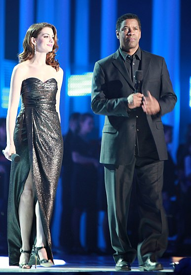

Born in
Mount Vernon, New York, U.S
123-456-7890
mailto:denzel@washington.com
https://en.wikipedia.org/wiki/Denzel_Washington
Denzel Hayes Washington Jr. is an American actor, producer, and director. In a career spanning over four decades, Washington has received numerous accolades, including a Tony Award, two Academy Awards, three Golden Globe Awards and two Silver Bears. He was honored with the Cecil B. DeMille Lifetime Achievement Award in , the AFI Life Achievement Award in , and in The New York Times named him the greatest actor of the 21st century. In , Washington received the Presidential Medal of Freedom.
After training at the American Conservatory Theater, Washington began his career in theatre, acting in performances off-Broadway. He first came to prominence in the NBC medical drama series St. Elsewhere –, and in the war film A Soldier’s Story . Washington won Academy Awards for Best Supporting Actor for his role as an American Civil War soldier in Glory and for Best Actor for playing a corrupt cop in Training Day . His other Oscar-nominated roles were in Cry Freedom , Malcolm X , The Hurricane , Flight , Fences , Roman J. Israel, Esq. and The Tragedy of Macbeth .
He established himself as a leading man with starring roles in Mo’ Better Blues , Mississippi Masala , Philadelphia , Courage Under Fire , Remember the Titans , Man on Fire , Inside Man , and American Gangster . He starred in The Equalizer trilogy –. Washington directed and starred in the films Antwone Fisher , The Great Debaters , and Fences .
Washington made his Broadway debut in Checkmates . He won the Tony Award for Best Actor in a Play for starring in the Broadway revival of August Wilson’s play Fences in . He later directed, produced, and starred in the film adaptation in . Washington has since returned to Broadway in the revivals of Lorraine Hansberry play A Raisin in the Sun and the Eugene O’Neill play The Iceman Cometh .
Denzel Hayes Washington Jr. was born in Mount Vernon, New York, on . His mother, Lennis "Lynne", was a beauty parlor owner and operator born in Georgia and partly raised in Harlem, New York. His father, Denzel Hayes Washington Sr., a native of Buckingham County, Virginia, was an ordained Pentecostal minister, who was also an employee of the New York City Water Department, and worked at a local S. Klein department store.
Washington attended Pennington-Grimes Elementary School in Mount Vernon until . When he was 14, his parents divorced and his mother sent him to the private preparatory school Oakland Military Academy in New Windsor, New York. Washington later said, "That decision changed my life, because I wouldn't have survived in the direction I was going. The guys I was hanging out with at the time, my running buddies, have now done maybe 40 years combined in the penitentiary. They were nice guys, but the streets got them." After Oakland, he attended Mainland High School in Daytona Beach, Florida, from to .
He was interested in attending Texas Tech University: "I grew up in the Boys Club in Mount Vernon, and we were the Red Raiders. So when I was in high school, I wanted to go to Texas Tech in Lubbock just because they were called the Red Raiders and their uniforms looked like ours." Instead, he earned a BA in Drama and Journalism from Fordham University in . At Fordham, he played collegiate basketball as a guard under coach P. J. Carlesimo. After a period of indecision on which major to study and taking a semester off, Washington worked as creative arts director of the overnight summer camp at Camp Sloane YMCA in Lakeville, Connecticut. He participated in a staff talent show for the campers and a colleague suggested he try acting.
Returning to Fordham that fall with a renewed purpose, Washington enrolled at the Lincoln Center campus to study acting, where he was cast in the title roles in Eugene O’Neill’s The Emperor Jones and Shakespeare’s Othello. He then attended graduate school at the American Conservatory Theater in San Francisco, California, where he stayed for one year before returning to New York to begin a professional acting career.
Early roles and rise to prominence Washington spent the summer of in St. Mary’s City, Maryland, in summer stock theater performing Wings of the Morning, the Maryland State play, which was written for him by incorporating an African–American character/narrator based loosely on the historical figure from early colonial Maryland, Mathias de Sousa.
Shortly after graduating from Fordham, Washington made his screen acting debut in the made-for-television film Wilma which was a docudrama about sprinter Wilma Rudolph, and made his first Hollywood appearance in the film Carbon Copy. He shared a Distinguished Ensemble Performance Obie Award for playing Private First Class Melvin Peterson in the Off-Broadway Negro Ensemble Company production A Soldier’s Play which premiered
A major career break came when he starred as Dr. Phillip Chandler in NBC’s television hospital drama St. Elsewhere, which ran from to . He was one of only a few African–American actors to appear on the series for its entire six–year run. He also appeared in several television, motion picture and stage roles, such as the films A Soldier’s Story , Hard Lessons and Power . In , he starred as South African anti–apartheid political activist Stephen Biko in Richard Attenborough’s Cry Freedom, for which he received a nomination for the Academy Award for Best Supporting Actor.
In , Washington won the Academy Award for Best Supporting Actor for his portrayal of a defiant, self–possessed ex–slave soldier in the film Glory. That same year, he appeared in the film The Mighty Quinn; and in For Queen and Country, where he played the conflicted and disillusioned Reuben James, a British soldier who, despite a distinguished military career, returns to a civilian life where racism and inner city life lead to vigilantism and violence.

In the summer of , Washington had appeared in the title role of the Public Theater’s production of William Shakespeare’s Richard III. Mel Gussow of The New York Times praised Washington as "an actor of range and intensity, is expert at projecting a feeling of controlled rage". Also that year Washington starred as Bleek Gilliam in the Spike Lee film Mo’ Better Blues. Charles Murray of Empire praised Washington’s performance as a "taut portrayal of the driven musician" and "like all Lee’s film, Mo’ Better Blues is a real ensemble piece, and the standard of the performances is uniformly excellent: but Washington [and] Lee deserve extra plaudits."
In , he starred as Demetrius Williams in the Mira Nair directed romantic drama Mississippi Masala opposite Sarita Choudhury. Set primarily in rural Mississippi, the film explores interracial romance between African Americans and Indian Americans. Critic Roger Ebert of The Chicago Sun-Times praised the chemistry of the two leads writing, "Washington is an actor of immense and natural charm, and he makes a good match with Sarita Choudhury."
Washington was reunited with Lee to play one of his most critically acclaimed roles, the title character of the historical epic Malcolm X . The New York Times gave the film it’s Critic’s Pick with Vincent Canby declaring, "In Denzel Washington it also has a fine actor who does for ’Malcolm X’ what Ben Kingsley did for ’Gandhi’. Mr. Washington not only looks the part, but he also has the psychological heft, the intelligence and the reserve to give the film the dramatic excitement". His performance as the Black nationalist leader earned him another nomination for the Academy Award for Best Actor. Also that year, he established the production company Mundy Lane Entertainment. The next year, he played the lawyer defending a gay man with AIDS played by Tom Hanks in the Jonathan Demme film Philadelphia . Sight & Sound wrote, "Casting Washington in the lead guaranteed the film the black audience that otherwise might not have had much interest in the problems of a rich white homosexual with Aids. But Aids is rampant in inner cities, where it attacks not just gay men, but IV drug users and women."
During the early and mid–s, Washington starred in several successful thrillers, including The Pelican Brief with Julia Roberts in , and Crimson Tide with Gene Hackman in , as well as the Shakespearean comedy Much Ado About Nothing directed by Kenneth Branagh. In , he played a U.S. Army officer who investigates a female chopper commander's worthiness for the Medal of Honor in Courage Under Fire, opposite Meg Ryan. Variety wrote, "All of [the] predicaments are palpably and convincingly registered through Washington’s probing, reserved and sensitively drawn performance in a role that, in another era, might have been played by the likes of a Montgomery Clift or William Holden."
In , he appeared with Whitney Houston in the romantic comedy The Preacher’s Wife. In , Washington starred in Spike Lee’s film He Got Game. Washington played a father serving a six–year prison term when the prison warden offers him a temporary parole to convince his top–ranked high–school basketball player son (Ray Allen) to sign with the governor’s alma mater, Big State. The film was Washington’s third collaboration with Lee. The same year he starred in Gregory Hoblit’s supernatural horror film Fallen, with John Goodman, James Gandolfini, and Donald Sutherland.
In , Washington starred alongside Angelina Jolie in The Bone Collector. Also in , Washington starred in The Hurricane, a film about boxer Rubin ’Hurricane’ Carter, whose conviction for triple murder was overturned after he spent almost 20 years in prison. Although less successful at the box office than The Bone Collector, Hurricane had a better reception from critics. He received a Silver Bear Award at the Berlin International Film Festival for his role as Carter. Roger Ebert, film critic for The Chicago Sun–Times, wrote of Washington’s performance, "This is one of Denzel Washington’s great performances, on a par with his work in Malcolm X."
At the 57th Golden Globe Awards in , Washington won the Golden Globe Award for Best Actor — Motion Picture Drama for his work in The Hurricane. He was the first black actor to win the award since Sidney Poitier in . Mick LaSalle of the San Francisco Chronicle declared, "Washington gives a penetrating portrait of life at its most extreme. He takes the viewer into the mind of a man experiencing confinement and physical deprivation. More profoundly, he shows what it’s like to deal every day with the torments of wild rage and impotence, despair and hope." In , he portrayed Herman Boone, the high school football coach in the Disney sports drama film Remember the Titans which grossed over US$100 million in the U.S. Andrew O’Hehir of Salon wrote, "Washington is of course the linchpin of Remember the Titans; he’s a commanding actor in a commanding role, and as memorable as he was in The Hurricane."
Washington starred in the Antoine Fuqua directed crime thriller Training Day acting opposite Ethan Hawke. He portrayed Detective Alonzo Harris, a corrupt Los Angeles cop. Roger Ebert wrote of his performance, "For Denzel Washington, [its] a rare villainous role; he doesn't look, sound or move like his usual likable characters...he's like a monster from a horror film, unkillable and implacable." Washington won an Academy Award for Best Actor becoming the second African–American actor to win the category after Poitier, who was presented with an Honorary Academy Award the same night.He also received nominations for the Golden Globe Award for Best Actor — Motion Picture Drama and the Screen Actors Guild Award for Outstanding Performance by a Male Actor in a Leading Role.
In , he starred in the Nick Cassavettes directed healthcare–themed drama John Q. portraying John Quincy Archibald. Washington acted opposite James Woods, Robert Duvall, and Ray Liotta. The film was a financial success but received mixed reviews with critics praising Washington’s performances. BBC film critic Neil Smith wrote, "What credibility there is comes from Washington’s intense, humane performance and the supporting players’ sterling attempts to rise above the stereotypical roles with which they have been saddled." That same year Washington directed his first film, a well–reviewed drama called Antwone Fisher , in which he also co–starred as a Navy psychiatrist. Stephen Holden of The New York Times praised his direction writing, "Mr. Washington shows a confident grasp of cinematic narrative in a hearty meat-and-potatoes style. But the most remarkable aspect of his behind–the–camera debut is his brilliantly surefooted handling of actors." He also praised his acting adding, "[He] is so sensitively reactive that his performance seems more lived than acted".
Between and , Washington appeared in a series of thrillers that performed generally well at the box office, including Carl Franklin’s Out of Time opposite Eva Mendez and Tony Scott’s Man on Fire alongside Dakota Fanning. In he acted opposite Meryl Streep in the remake of the film of the same name, The Manchurian Candidate. In , he starred in Inside Man, a Spike Lee–directed bank heist thriller co–starring Jodie Foster and Clive Owen. Todd McCarthy of Variety wrote, it’s "flashy cast, clever script and vibrant showcasing of New York City are strong plusses for Spike Lee’s most mainstream studio venture". Later that year he starred in the time travel movie Déjà Vu released in November.
In , he was back onstage again as Brutus in a Broadway production of Julius Caesar. Theatre critic Ben Brantley of The New York Times wrote, "Washington does not embarrass himself, as leading citizens of Hollywood have been known to do on Broadway. But even brilliantined in the glow of his inescapable fame, he can’t help getting lost amid the wandering, mismatched crowd and the heavy topical artillery that have been assembled here." Despite mixed reviews, the production’s limited run was a consistent sell–out.
In , he co–starred with Russell Crowe for the second time (the first was ’s Virtuosity) in Ridley Scott’s American Gangster for which he received a Golden Globe Award for Best Actor — Motion Picture Drama nomination. He also directed and starred in the drama The Great Debaters with Forest Whitaker. He next appeared in Tony Scott’s film The Taking of Pelham 123 (a remake of the thriller of the same name), where he played New York City subway security chief Walter Garber opposite John Travolta’s villain.

Washington returned to Broadway playing Troy Maxson, opposite Viola Davis, in the revival of August Wilson’s Fences . Ben Brantley of The New York Times wrote, "Mr. Washington has the fluid naturalness we associate with good screen actors... face and stance alone provide fascinating (and damning) glimpses into Troy’s attitudes toward his son from an earlier relationships". Washington won the Tony Award for Best Actor in a Play on . That same year, Washington starred in The Book of Eli , a post–apocalyptic action–drama set in the near future. Also in , he starred as a veteran railroad engineer in the action film Unstoppable, about an unmanned, half–mile–long runaway freight train carrying dangerous cargo. The film was his fifth and final collaboration with director Tony Scott, following Crimson Tide , Man on Fire , Déjà Vu and The Taking of Pelham 123 .
In , Washington starred in Flight, for which he was nominated for an Academy Award for Best Actor for his performance as an alcoholic airline pilot facing investigation for his part in a plane crash. He co–starred with Ryan Reynolds in Safe House, where he prepared for his role by subjecting himself to a torture session that included waterboarding. In , Washington starred in 2 Guns, alongside Mark Wahlberg. From April to June , Washington played the leading role in the Broadway production of Lorraine Hansberry’s classic drama A Raisin in the Sun, directed by Kenny Leon. The show received positive reviews and won the 2014 Tony Award for Best Revival of a Play. That same year he starred in The Equalizer , an action thriller film directed by Antoine Fuqua and written by Richard Wenk, based on the television series of same name starring Edward Woodward. He reprised his role in his first sequel, The Equalizer 2 and the third and final sequel The Equalizer 3 .
In , Washington starred in The Magnificent Seven, a remake of the western film of the same name, alongside Chris Pratt, Ethan Hawke, Vincent D’Onofrio, Lee Byung–hun, Manuel Garcia–Rulfo, Martin Sensmeier, Haley Bennett, and Peter Sarsgaard. Principal photography began on , in north Baton Rouge, Louisiana. The film premiered on Toronto International Film Festival, and was released in the United States in conventional and IMAX theatres on . In The Magnificent Seven, Washington plays Sam Chisolm ("the Bounty Hunter"), a duly sworn warrant officer from Wichita, Kansas. His character was renamed from Chris Adams (played by Yul Brynner in the original film) to Sam Chisolm. It is Washington’s first Western film. Washington did not watch Westerns growing up, as it was the end of the Western era in the movies. Moreover, he and his siblings were barred from going to the cinema by his father, a minister in a church. They grew up watching Biblical films instead, like King of Kings and The Ten Commandments, although he has said that he watched portions of the shows Rawhide and Bonanza. He did not view the original film in preparation, but has watched Seven Samurai. Fuqua flew to New York City to negotiate with Washington, who accepted the offer. In , Washington directed the film Fences, co–starring Viola Davis and Stephen McKinley Henderson and based on August Wilson’s play of the same name, with a script by Wilson. Set in s Pittsburgh, Washington plays a former Negro league baseball player working as a garbage collector who struggles to provide for his family and come to terms with the events of his life. The film was released on , by Paramount Pictures. Owen Gleiberman of Variety wrote, "Washington, as both actor and director, gets the conversation humming with a speed and alacrity that keeps the audience jazzed...Washington tears through it with a joyful ferocity, like a man possessed." For his performance, Washington was nominated in the Best Actor category for a Golden Globe Award, a Screen Actors Guild Award, and an Academy Award. The film was nominated for three other Oscars, including Best Picture and Best Adapted Screenplay, and won Davis her first Oscar, in the Best Supporting Actress category.
The following year, Washington starred in the legal drama film Roman J. Israel, Esq. . Peter Bradshaw of The Guardian wrote, "[He]’s a star player, styling out his character’s complicated and tricky mix of attributes...However contrived, this character is always fully and comfortably inhabited, and Washington brings off the funny moments". While the film received mixed reviews, his performance was praised by critics and led to nominations for a Golden Globe Award, a Screen Actors Guild Award and an Academy Award, Washington's ninth Oscar nomination overall, and his sixth for Best Actor.
Beginning , Washington starred as Theodore "Hickey" Hickman in a Broadway revival of Eugene O’Neill’s The Iceman Cometh. The production, directed by George C. Wolfe, began regular performances April 26 and ran for 14 weeks. Washington received positive reviews with Alexis Soloski of The Guardian writing, "For most of it, Washington is playing Washington, letting his good looks and irrepressible charm do most of the character work, though the play’s most exciting moments are when he lets that charm falter (something he’s also been exploring in his recent film work, too) showing something uglier and more ravaged underneath."

In , he produced the Netflix film adaptation of the August Wilson play Ma Rainey’s Black Bottom starring Chadwick Boseman and Viola Davis. The film was directed by George C. Wolfe and received positive reviews. The following year he portrayed Deputy Sheriff Joe "Deke" Deacon in the crime thriller The Little Things acting opposite Rami Malek and Jared Leto. The film was released during the Covid–19 pandemic and was released in theatres and on HBO Max. Also in , Washington portrayed the titular character in the film adaptation of the William Shakespeare tragedy Macbeth. He received universal acclaim for his performance and was nominated for several awards, including an Academy Award, a Golden Globe Award, and a Screen Actors Guild Award. That same year, Washington directed the drama A Journal for Jordan, based on the memoir A Journal for Jordan: A Story of Love and Honor by Dana Canedy. It received a wide theatrical release on and received mixed reviews from critics.
In , Washington was cast in Ridley Scott’s epic historical drama Gladiator 2 alongside Paul Mescal, Pedro Pascal, and Derek Jacobi. The film is a sequel to Scott’s Gladiator . Also in , Washington served as a producer to The Piano Lesson, the Netflix film adaptation of the August Wilson play of the same name starring John David Washington, Danielle Deadwyler, and Samuel L. Jackson.
